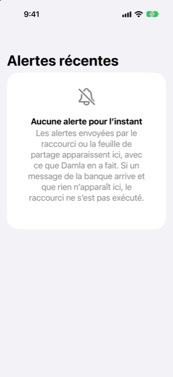

Guide › Capture automatique
Ce que Damla ignore, et comment annuler une alerte
Les publicités, les limites, les rappels et les codes sont ignorés ; comment revenir sur une erreur.
Damla enregistre un message bancaire uniquement lorsqu'il indique que de l'argent a réellement bougé. Les publicités, les avis de limite, les rappels et les codes à usage unique sont ignorés. Tout ce sur quoi Damla agit peut être annulé depuis un seul écran.

Quand l'utiliser
- Un message est arrivé à Damla et rien n'a changé, et vous voulez savoir pourquoi.
- Damla a agi sur un message sur lequel elle n'aurait pas dû agir, et vous voulez revenir en arrière.
- Vous venez de configurer un Shortcut et voulez voir ce que Damla fait avec chaque message.
Ce que Damla ignore
Les messages comme ceux-ci ne sont jamais enregistrés :
- Codes à usage unique et codes d'approbation (« otp », « verification code », « do not share ») : abandonnés, et le message n'est pas conservé — ni dans vos livres, ni dans le journal, et jamais écrit sur le disque.
- Publicités et offres : des formulations telles que « cashback », « offer », « rewards », « congratulations », « apply now », « valid until ».
- Avis de limite et de taux : « limit has been », « limit is set », « limit increased », « interest rate ».
- Rappels : des formulations telles que « reminder », « don't forget », « kindly pay » et « pay by ».
- Montants qui n'ont pas bougé : un nombre écrit juste après « over », « above », « more than », « exceeding », « up to » ou « minimum spend », ou une phrase construite sur « if you » ou « you can ». C'est une offre ou une limite, pas une dépense.
- Une transaction qui n'a pas eu lieu : refusée, sans succès, échouée, rejetée, insuffisante.
- Messages sans rien sur l'argent, comme un avis de livraison : abandonnés, non conservés, non journalisés.
Lorsqu'un message concernant de l'argent est ignoré, il est marqué Ignoré. La ligne du journal porte ses premiers mots, jamais le message entier, pour qu'une erreur puisse être vue plus tard. Tous les messages ignorés ne laissent pas de ligne : un message qu'un Shortcut a transmis pendant que votre téléphone était déverrouillé, et que Damla a abandonné, n'est pas du tout enregistré. Celui qui arrive pendant que le téléphone est verrouillé est lu à la prochaine ouverture de Damla, et cette lecture est conservée.
Ce qui n'est pas ignoré
Un message qui dit que votre facture est prête devient une facture attendue, pas une dépense. Le débit de carte ou de banque qui la paie ensuite est la transaction. Un avis de relevé de carte (un total dû avec un minimum dû) est lu comme un relevé et attend que vous l'examiniez. Un rappel pour une facture que Damla a déjà notée n'en ajoute pas une seconde : il actualise la date d'échéance de cette facture, et la ligne dit Rappel d'une facture déjà notée. Tout ce qui n'est pas clair attend dans la boîte de réception, où un seul appui suffit. Rien qui crée un engagement n'est ajouté sans que vous le confirmiez.
Vérifier ce qui s'est passé
- Ouvrez Réglages, appuyez sur Messages bancaires et relevés, puis sur Alertes récentes.
- Lisez la liste. Chaque message d'argent montre ce qui a été fait et pourquoi : Ajouté, En attente dans la boîte de réception, Déjà enregistré, Ignoré ou Noté, rien à enregistrer pour l'instant, ainsi que depuis combien de temps. La liste contient les 50 lignes les plus récentes.
- Si un message d'argent est arrivé et que rien n'est listé, le Shortcut n'a pas tourné. Vérifiez le mot-clé, que le réglage est sur Run Immediately, et que le texte est la pilule bleue d'entrée du Shortcut.
Annuler une alerte
- Dans Alertes récentes, balayez vers la droite sur une alerte sur laquelle Damla a agi et appuyez sur Annuler.
- Confirmez. Ce qui est annulé :
- Une alerte qui a été ajoutée : la transaction qu'elle a ajoutée est supprimée. Si cette transaction avait réglé une facture, la facture est de nouveau due. - Une alerte qui a été notée : la facture qu'elle a notée est oubliée.
- La ligne reste dans la liste avec « Annulée » devant, pour que vous puissiez voir ce qui s'est passé.
Annuler n'apparaît que sur les lignes où Damla a agi de sa propre initiative et où l'action est toujours en vigueur : une transaction qu'elle a ajoutée et qui est toujours dans vos livres, ou une facture qu'elle a notée et qui est toujours ouverte. Les lignes marquées Déjà enregistré, Ignoré ou En attente dans la boîte de réception n'ont rien à reprendre.
Balayer dans l'autre sens propose Supprimer, qui ne retire que la ligne du journal. Tout effacer vide la liste ; les transactions déjà ajoutées restent.
Bon à savoir
Voir aussi
Quelque chose n’est pas clair ou manque ? Écrivez à support@raveniq.ai en indiquant la page.